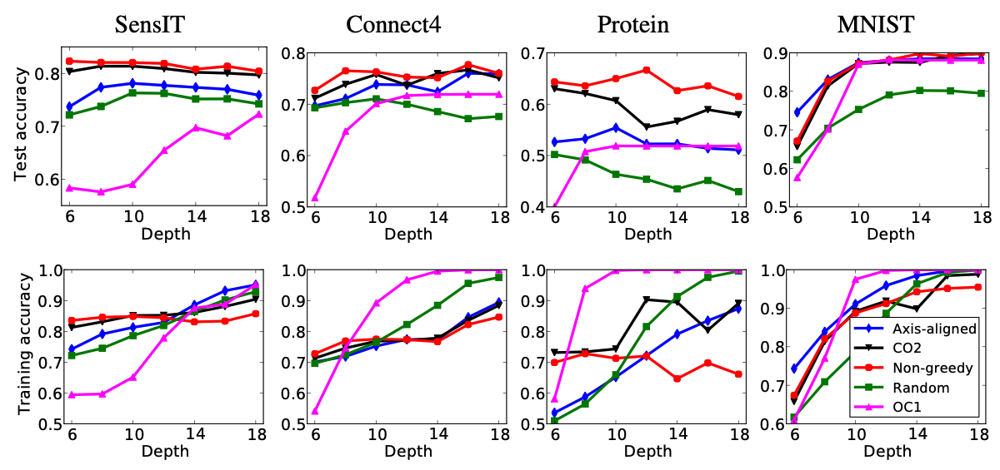
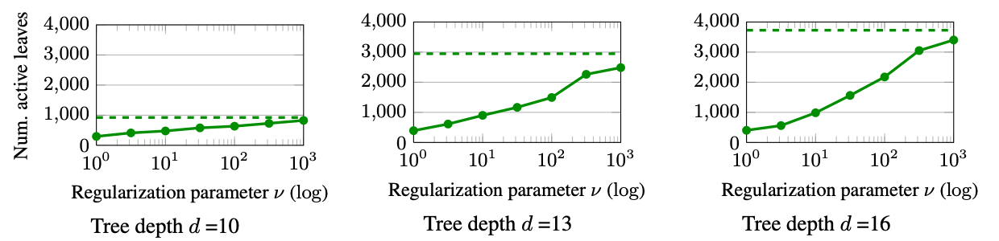
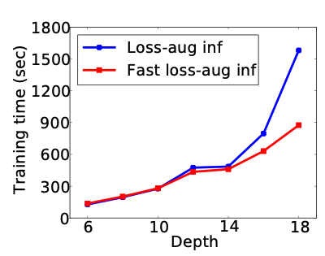

- \(O(2^d p)\) → \(O(d^2 p)\)勾配 1 回あたりの損失拡張推論の計算量（\(p\) は入力の次元）。上界の取り方を変え、調べる葉を全部の葉から \(d+1\) 個に絞った。
- 単一の木で最良のテスト精度SensIT、Connect4、Protein、MNIST で深さ 6〜18 の木を比べ、非貪欲な木は複数のデータで深さによらず最良のテスト精度だったと論文は述べる（論文 Fig. 2）。
- \(\nu\) で使う葉の数が決まる分岐の重みのノルムの上限 \(\nu\) を小さくすると、学習中に使われない葉が増え、木が刈り込まれる（MNIST、論文 Fig. 3）。
貪欲法はノードに届いたデータだけで分岐を決め、下の層の結果を見て上の分岐を直せない
ID3 や CART に始まる決定木の学習は貪欲法である。ノード \(i\) の分岐関数 \(s_i\) を、そのノードに届いた学習データ \(\mathcal{D}_i\) だけで最適にし、分けた 2 つの部分集合を子ノードの学習データにする。これを繰り返して木を育てる。\(s_i\) は \(\mathcal{D}_i\) だけで決まるので、下の層を学習した結果に合わせて \(s_i\) を調整することはできない。
決定木全体を大域的な目的関数で最適にする問題は NP 完全で（Hyafil & Rivest 1976）、貪欲法に代わる効率のよい方法は見つかっていなかった。Bennett（1994）の多重線形計画による非貪欲な方法は 0-1 損失の二値分類に限られ、計算量が大きいのでノードの少ない木にしか使えない。論文は異なる深さの分岐を 1 つの目的関数で同時に最適にすると、ノードどうしが協調してより小さな木になり、汎化の性能も上がると主張する。
全ノードの分岐の結果を \(m\) ビットの符号とみなすと、決定木の学習は潜在変数つきの構造化予測になる
内部ノードが \(m\) 個、葉が \(m+1\) 個の二分木を考える。内部ノード \(i\) は重み \(\boldsymbol w_i\) の線形しきい値関数 \(\operatorname{sgn}(\boldsymbol w_i^\top \boldsymbol x)\) で入力 \(\boldsymbol x \in \mathbb{R}^p\) を左右に振り分け（定数 \(-1\) を特徴に足してオフセットも表す）、葉 \(j\) はソフトマックスでクラスの分布を表すパラメータ \(\boldsymbol\theta_j\) をもつ。重みを並べた行列を \(W\)、葉のパラメータを並べた行列を \(\Theta\) とする。
論文の出発点はすべての内部ノードの分岐の結果 \(\operatorname{sgn}(W\boldsymbol x) \in \{-1,+1\}^m\) を 1 つの潜在変数とみなすことである。符号から到達する葉を選ぶ関数 \(f\) を使うと、選ばれた葉のパラメータは \(\Theta^\top f(\operatorname{sgn}(W\boldsymbol x))\) と書ける。符号は内積の最大化で表せる。
\(\ell\) は対数損失や二乗損失などの損失で、正解の分岐の結果は事前にわからない。この形は潜在変数つきの構造化予測（Yu & Joachims 2009）の目的関数と同じ形をしている。ただし経験損失 \(\mathcal{L}\) は \(W\) について不連続で区分的に一定なので、そのままでは勾配法で最適にできない。
構造化 SVM にならった経験損失の上界は \(W\) について凸関数と凹関数の和になり、分岐の重みのノルムを制約して最小にする
1 つのデータ \((\boldsymbol x, y)\) について、損失を次のように上から抑える。右辺の第 2 項は \(\boldsymbol h = \operatorname{sgn}(W\boldsymbol x)\) で最大になり、第 1 項で \(\boldsymbol g = \operatorname{sgn}(W\boldsymbol x)\) とすれば両辺が等しくなるので、不等式が成り立つ。
第 1 項の最大化は構造化予測で損失拡張推論（loss-augmented inference）と呼ばれる。右辺は \(W\) について区分線形で、凸関数と凹関数の和になる。左辺の損失は \(W\) の大きさを変えても変わらないが、右辺は \(W\) を定数倍で大きくするほど損失に近づく（命題 1）。そのまま最小にすると \(W\) を大きくするだけで上界が下がり、上界は損失と同じく段差の多い関数に近づく。そこで論文は \(W\) の各行のノルムを制約し、次の代理の目的関数を最小にする。
どの \(\nu\) でも \(\mathcal{L} \le \mathcal{L}'\) が成り立つ。\(\nu\) が小さいほど各ノードで大きなマージンをとる \(W\) が選ばれる。正則化をラグランジュ形式の罰則ではなく制約で入れたのは、各ステップで勾配が 0 でない行が少なく、まばらに更新できるからである。論文は、ノルムを制約したほうが学習時にも検証時にも損失が低くなったと報告している。
損失拡張推論で調べる符号をハミング距離 1 以内に限ると、勾配 1 回の計算量が \(O(2^d p)\) から \(O(d^2 p)\) に下がる
\(f(\boldsymbol g)\) がとる値は \(m+1\) 通り（どの葉に着くか）しかない。葉 \(j\) を決めれば、根から \(j\) への経路上のビットは経路の向きに合わせ、経路の外のビットは \(\operatorname{sgn}(\boldsymbol w_i^\top \boldsymbol x)\) にすればよい。木を深さ優先で 1 回たどると全部の葉を調べられるが、計算量は \(O(mp) \subseteq O(2^d p)\) で、深い木では重い。
そこで論文は \(\boldsymbol g\) を \(\operatorname{sgn}(W\boldsymbol x)\) からハミング距離 1 以内（違うビットが高々 1 つ）に限った上界に変える。この上界も同じ証明で成り立つ。経路の外のビットを反転しても着く葉は変わらないので、候補になる葉は今の葉と、経路上の \(d\) 個のビットのどれかを反転して着く葉の、合わせて \(d+1\) 個になる（図1）。損失拡張推論は \(O(d^2 p)\)、勾配の更新全体は \(O(d^2 p + k)\)（\(k\) はクラスの数）で済む。
学習は確率的勾配法で行う。学習データから 1 つを無作為に選び、\(\hat{\boldsymbol h} = \operatorname{sgn}(W\boldsymbol x)\) と損失拡張推論の解 \(\hat{\boldsymbol g}\) を求め、\(W \leftarrow W - \eta\,\hat{\boldsymbol g}\boldsymbol x^\top + \eta\,\hat{\boldsymbol h}\boldsymbol x^\top\) と更新し、各行をノルム \(\sqrt\nu\) の球に射影してから \(\Theta\) を損失の勾配で更新する。\(\hat{\boldsymbol g}\) と \(\hat{\boldsymbol h}\) が違うのは経路上のビットだけなので、更新されるのは高々 \(d\) 行である。初期値は情報利得で育てた軸に平行な木から、貪欲版の CO2（論文の上界を深さ 1 の木に 1 ノードずつ当てる方法）で作る。勾配法を続けると、どのデータも割り当てられない葉が出て、ほとんど元に戻らない。これを抑えるため、データと葉の割り当てをしばらく固定して上界を最適にし、改善が小さくなったら割り当てを更新する変種（Stable SGD）も提案している。
4 つのデータで深さ 6〜18 の単一の木を比べ、非貪欲な木は貪欲法の木よりテスト精度が高く、過学習しにくかった
LIBSVM のベンチマークから多クラス分類の SensIT、Connect4、Protein、MNIST を使った。比較したのは情報利得による軸に平行な木、座標降下法で斜めの分岐を決める OC1、ランダムな超平面から最良の分岐を選ぶ木、CO2 の 4 つの貪欲法である。単一の木では精度を主に決めるのは木の大きさなので、最大の深さを 6 から 18 まで 2 刻みで変え、深さごとにハイパーパラメータを調整した。
論文の観察は 3 つある。非貪欲な木は複数のデータで深さによらず最良のテスト精度だった。過学習しにくく、さまざまな深さで汎化の性能が高かった（論文はノルムの制約が学習データへの当てはまりを調整する役目を果たすと考えている）。同じ上界を 1 ノードずつ当てる CO2 と比べると、多くの場合で非貪欲な最適化が精度を上げた。

ノルムの上限 \(\nu\) は \(\{0.1, 1, 4, 10, 43, 100\}\) から検証誤差が最小のものを選び、学習データと検証データを合わせて木を学習し直してテストした。\(\nu\) は学習中の葉の刈り込みの度合いも決める。MNIST では \(\nu\) が小さいほど使われる葉が少なく、初期値にした軸に平行な木（点線）よりはるかに少ない葉で済んだ（図3）。1,000 エポックの確率的勾配法にかかる時間を Connect4 で比べると、全探索の損失拡張推論は深い木で指数的に増え、高速版のほうがずっと伸びが小さかった（図4）。Connect4 の学習データは 55,000 件しかないので、論文はより大きなデータではさらに速くなると見込んでいる。


木全体の目的関数を勾配法で下げる方法で、得られる木は局所的な解であり、最適性は保証しない
- 何を最適にするか：木の構造（深さ）は固定し、すべての分岐の重み \(W\) と葉のパラメータ \(\Theta\) を、経験損失の上界という 1 つの目的関数で同時に学ぶ。目的関数は非凸で、確率的勾配法が見つけるのは局所的に最適な分岐の組である。混合整数最適化や動的計画法の系統とは違い、最適性は証明しない。
- 分岐の形：特徴量の線形結合による斜めの分岐。予測のときの分岐は硬い（0 か 1）ままで、推論の計算量は \(O(dp)\) に保たれる。論文は、柔らかい分岐を使う階層的な専門家の混合（Jordan & Jacobs 1994）では、データごとにほとんどの専門家を評価する必要があり、決定木の計算上の利点が失われると指摘している。
- 今後の拡張：結論では \(W\) にまばらさを促す正則化を入れて分岐をまばらにすること、カーネル法で高次の分岐に広げることを、将来の課題として挙げている。まばらな斜めの分岐の木は、のちに TAO（Carreira-Perpiñán & Tavallali 2018）が扱っている。
@inproceedings{norouzi2015efficient,
title = {Efficient Non-greedy Optimization of Decision Trees},
author = {Norouzi, Mohammad and Collins, Maxwell D. and Johnson, Matthew and Fleet, David J. and Kohli, Pushmeet},
booktitle = {Advances in Neural Information Processing Systems 28 (NIPS 2015)},
editor = {Cortes, C. and Lawrence, N. and Lee, D. and Sugiyama, M. and Garnett, R.},
publisher = {Curran Associates, Inc.},
volume = {28},
year = {2015}
}
ページの記述と図は NIPS 2015 の出版版（proceedings の PDF）による。arXiv 1511.04056 v1 の本文と照合し、実験の記述と図に違いはなかった。所属は論文の表記で、脚注に Norouzi と Collins の研究の一部は Microsoft Research Cambridge 在籍中のものとある。ページ番号は proceedings のページに記載がないので省いた。